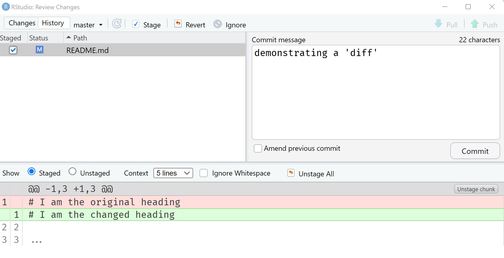
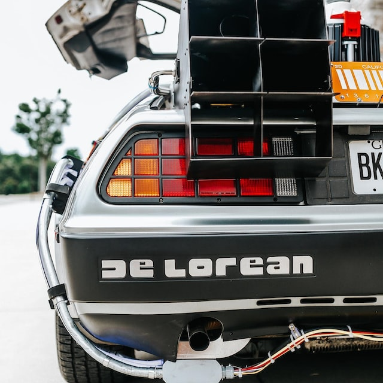

flowchart LR A[Anna v1] --> B[Anna v2] B --> C[Anna v3] B --> D[Ben v1] D --> E[Anna + Ben v4] C --> E
openstatsware Workshop: Good Software Engineering Practice for R Packages
October 8, 2026
Photo by Rich @ rhubbardstockfootage on Unsplash
Key issue:
Manage complexity over time or between people
Photo from Tim Mossholder on Unsplash
No matter how a group is organised, the work of many contributors often needs to be combined into a single set of shared working documents
Managing changes/revisions to these documents is called versioning
flowchart LR A[Anna v1] --> B[Anna v2] B --> C[Anna v3] B --> D[Ben v1] D --> E[Anna + Ben v4] C --> E
Photo by Lf Asia & the Archive Team CC BY 3.0
git verb optionsgit invokes Gitverb is a placeholder for the different actions (such as branch or commit, more on that later)options is a placeholder for any option possibly required by a certain verb (not always required)git help is your friend!gitGraph commit commit commit commit commit
\(\leadsto\) Chain of versions with incremental changes
Photo by Felicia Montenegro on Unsplash


git checkout [commit hash to browse]git reset --hard [commit hash to reset to]my-file_final_v2_2019.RPhoto by Mila Tovar on Unsplash
gitGraph commit commit branch feature checkout feature commit commit checkout main commit
git branch [my new branch name]git branchgit checkout [branch name]Photo by Mila Tovar on Unsplash
gitGraph commit commit branch feature checkout feature commit commit checkout main commit merge feature
Photo by Max LaRochelle on Unsplash
gitGraph commit tag: "v0.0.1" commit branch feature-1 checkout feature-1 commit commit checkout main branch feature-2 checkout feature-2 commit checkout feature-1 commit checkout main commit tag: "bugfix" merge feature-1 tag: "v0.1.0" checkout feature-2 commit
sequenceDiagram
participant A as Anna
participant GH as GitHub server
participant B as Ben
A->>A: make change locally & commit to <feature>
A->>GH: push commit
A->>GH: open pull request
GH->>GH: run automated checks
A->>B: request review
B->>B: review code
B->>A: request changes
A->>A: implement changes locally & commit
A->>GH: push commit
GH->>GH: run automated checks
A->>B: request review
B->>B: review code
B->>GH: approve changes, unblocking merge
A->>GH: merge <feature> into <main>
GH->>GH: run automated checks on <main>
B->>GH: pull newest version of <main>
\(\leadsto\) Making collaboration on code scalable
.pub) to GitHub; keep the private key on your computer~/.ssh/id_rsa and id_rsa.pubRStudio’s dialog may not show existing Ed25519 keys. From its Terminal, you can create the recommended Ed25519 key instead:
Creators (initial authors): Kevin Kunzmann , Shuang Li , Alessandro Gasparini
Unless separately credited, this work is licensed under CC BY-SA 4.0.
Zurich 2026 sources adapt Zurich 2024 and Munich 2026, following Seoul 2026. Author credits are retained above.
Zurich adaptations by Daniel Sabanés Bové: course details, program, roxygen2 tags, SSH setup, and AI chapter. Full attribution and exceptions.
Reuse requires creator attribution, source and license links, and an indication of changes.